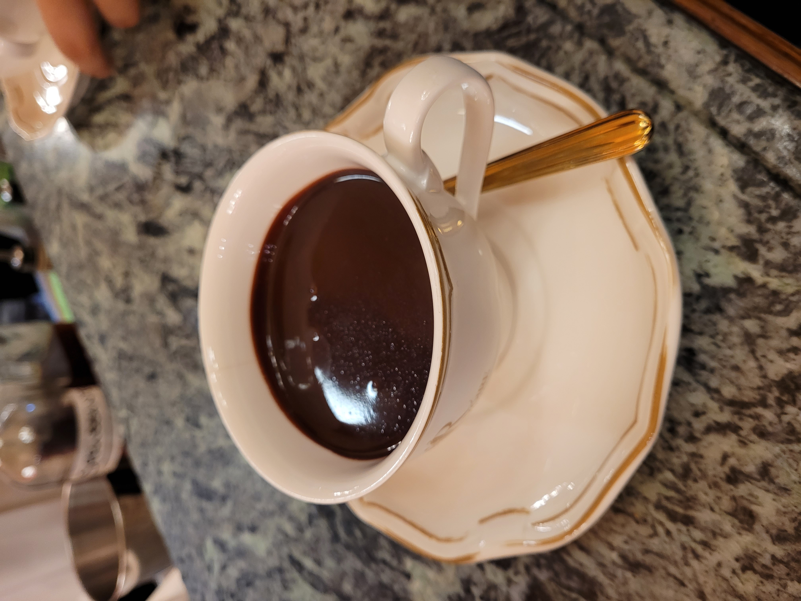
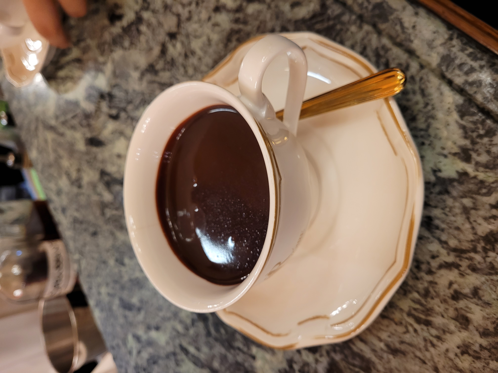

Tuscany
10/23/2023
This weekend, my study abroad organization, AIA, put together a
program-wide trip throughout Tuscany, specifically Florence and Pisa.
We left Rome Friday morning (waking up at an ungodly 6am to catch an
early 7am train to Florence), and spent the rest of the day immersing
ourselves in the history and culture of Florence. Of course, we climped
the Duomo, also known as the "Florence Cathedral" and "The Cathedral of
Saint Mary of the Flower", which was surprisingly exhausting. Coming in
at 455 (+/- 5) steps with low ceilings, narrow spiral staircases, tight
turn radii, and steep steps, it took a good amount of time and breathing
to go up. But once at the top, the view of the city was gorgeous and
worth every step. Our group collected to capture the moment together,
and immediately after the pictures, rain came pouring down. We
prompty made our way down, but everyone else at the top had the same
idea, not to mention everyone still trying to climb up. Suffice to say,
the singular entrance/exist was extremely bottle-necked and we all
became very drenched.
This was also the day we had the chance to try the famous Florentine
steak, Bistecca alla Fiorentina. Made from the sirloin of a
young steer part of the Chianina breed, this steak must be
prepared in a particular way. Namely, it must be at least a kilogram,
5-6 cm tall, grilled over charcoal embers, and turned exactly once.
There's more to it, but the quality was unparalleled.
The next day, we ventured to Pisa to visit the signiture Leaning Tower,
piazza, and cathedral. While we made it up the Leaning Tower of Pisa
without getting rained on, the down pour quickly followed our descent
from the tower. Naturally, we didn't let that stop us from capturing our
own iconic pictures.
Returning from a thoroughly soaked Pisa, we decided the best way to warm
us up and enjoy the rainy day vibes was to visit
Riviore Firenze, the birthplace of the hot chocolate. Now, I've
had many a hot chocos, but none quite compared to their house signiture.
The thick, gooey, dark chocolate had a rich flavor profile that was
perfectly cut and complimented by the house-made whipped cream. As a
sipping chocolate, it was something to enjoy over a longer period but
certainly hit the spot. Additionally, this place is, allegedly, where
the negroni was invented, but this seems to be a more dubious claim.
Still, it was an excellent negroni, so inventors or not, it was
certainly worth it.


 
